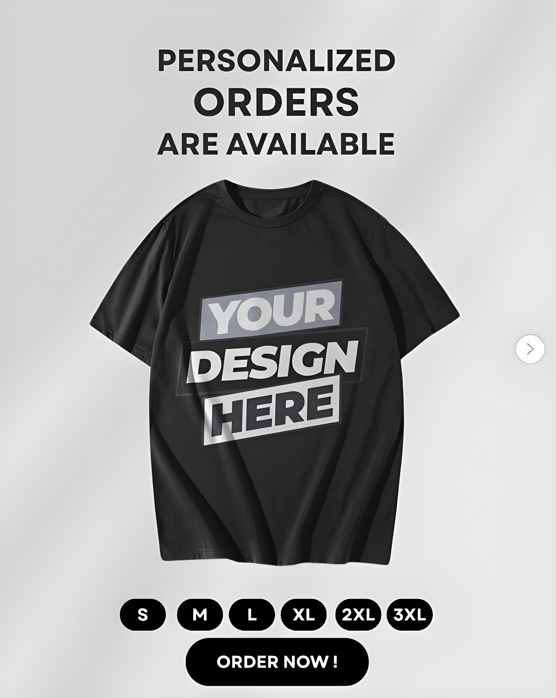

Playoff


Every design in this collection is drawn, printed and shipped for the people who still show up when it is 19 degrees and sleeting off Lake Erie. This is Dawg Pound apparel for the loyal: bulldog graphics, Cleveland, Ohio skylines,…

Green, gold and a lot of cheese. This collection covers Cheesehead Nation from every angle: quarterback tributes, EST 1919 collegiate crests, Wisconsin state outlines, Sunday Funday scripts and the kind of retro lettering that loo…

Washed-out seventies athletics, longhorn skulls, star-and-lightning graphics and distressed 1960 helmets. This capsule is built around vintage Dallas, Texas football style: silver, navy and heather grey garments that look like the…

Maize and blue, block lettering and zero apologies. Heavyweight crewnecks and tees built around the phrases Michigan fans actually shout: Michigan vs Everybody, Revenge Tour, Victory Sunday and Bet.…
Four dedicated collections, each with its own artwork language, colour palette and fan slang.
Cleveland, Ohio · Here We Go Brownies
Green Bay, Wisconsin · Go Pack Go
Dallas, Texas · How 'Bout Them Cowboys
Ann Arbor, Michigan · Go Blue
Every design in this collection is drawn, printed and shipped for the people who still show up when it is 19 degrees and sleeting off Lake Erie. This
Green, gold and a lot of cheese. This collection covers Cheesehead Nation from every angle: quarterback tributes, EST 1919 collegiate crests, Wisconsi
Washed-out seventies athletics, longhorn skulls, star-and-lightning graphics and distressed 1960 helmets. This capsule is built around vintage Dallas,
Maize and blue, block lettering and zero apologies. Heavyweight crewnecks and tees built around the phrases Michigan fans actually shout: Michigan vs
Bring your own idea - a nickname, a catchphrase, a family crest, a group or team slogan, a memorial, a gift for your crew. We turn it into original fan apparel you can buy one at a time.


Your nickname, catchphrase or team slogan — printed on tees, hoodies, mugs & more. No minimum order.